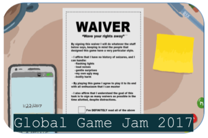

I graduated from NYU class of 2017 with a degree in Sociology and Computer Sciences. I have a strong interest in digital art and Time Based Media and executed the 2016-2017 restoration of
BRANDON a 1998-99 piece of netart by Shu Lea Cheang . My personal projects tend to focus
on the conservation/creation of digital art and I'm employed as a Data Scientist/Software Developer with IBM.
As a sociologist I've participated in
several research projects both quanitative and qualitative.
My research has focused primarily on criminal justice.
As a freshman I recieved funding from the Deans Undergraduate
Research Grant for an independent research project on Drug
and Mental Health Courts in Manhattan, NY and
Alleghany County,PA. Working with professors and court
officers I monitored court procedures and after producing
several papers for varios classes presented my observations
to the school in a research paper that was later published. I
also produced a research proposal meant to outline how the
project would continue in the future in regards to scope and
funding. In addition I conducted research on behalf of
N.Y.U Law School under Professor David Garland in the
form of a literature review on the development of the
police force and prison system in America
Dean of the College of Arts and Sciences Undergraduate
Research Grant, D.U.R.F Grant (2014)
: Dickson, Emma (2015). Ambivalence in
Diversion Courts. Inquiry a Journal of Undergraduate
Research Volume XIX, 44
BRANDON was programmed between 1997 and 1999 and used then-current web technologies such as Java applets, CGI scripts (written in Perl), JavaScript, HTML, and PHP. Almost two decades later, some of these technologies are no longer supported by contemporary browsers, and parts of BRANDON had become corrupted or inaccessible. Before the restoration, BRANDON's many Java applets that animate text and images were not displaying properly; font types, sizes and colors were not interpreted correctly; links were broken; the Mooplay interface was inoperable and the virtual court records were not accessible through the Theatrum Anatomicum interface.
The goal of the restoration was to reinstate BRANDON's intended online experience and interactivity as a living artwork, while preserving all functional behaviors and aesthetic properties of the work as defined by the original source code. No original code was removed, only commented out so that it is no longer executed. Every addition to the code was documented through source code annotation, version control and treatment reporting. BRANDON's Java applets were replaced with JavaScript functions and animated GIFs. Deprecated HTML tags that previously specified BRANDON's styling of text and pages were replaced with CSS styling, and HTML framesets were replaced with tables and iframes. Static user data sets were extracted from a MySQL database and integrated into the code.
Executed the 2016-2017 Restoration of Brandon
Migrated old web technologies to new HTML, css and js elements
Gained extensive knowledge of digital conservation documentation and techniques
Extreme Blue: Team Lucia
Lucia is a browser plug-in built to work with existing
enterprise social and file sharing software. Lucia utilizes
Watson APIs, graph theory, and natural language processing
to create a cognitive solution to a common problem for
employees: how do I find the right file when I need it,
and how do I find it efficiently? Lucia empowers employees to
find relevant documents pertinent to their needs. Lucia
tracks the evolution of a document through the network by
enabling employees to identify contributors to a document
as well as be made aware of those reusing their work. By
allowing the user to see where their files are going and
where they have been, Lucia is able to provide tailored
recommendations for related content, as well potential
collaborators and undiscovered network connections.
Worked in a team of three technical intern and one
MBA in quick one week sprints with weekly presentations
to executives and VP's
Built an NLP pipeline flask app deployed to Bluemix
that connected to a Java backend and graph database
Created a micro-service-framework so that the product
could sit on top of various software
Gained extensive knowledge of Watson microservices,
Python, Java, Javascript, Spring, Bluemix, Cloudant,
Orientdb, Chrome browser plugins and Oauth
Waive your rights away

Waive your rights away is a game about wavers and quick decisions. Made as part of a team for the 2017 global game jam I had a lot of fun creating it and hope you'll enjoy playing it!
The Haiku Generator is a chrome plugin meant to be used on news sites. Click the icon and recieve
a summary of the news in the form of a haiku. The haikus are generated using natural language processing summarizing algorithms
and syllable counting.
Read more about my methods/some examples here: Haiku Paper
Mixed connections recomibines real craigslist missed connections posts with creative fiction to create unique new posts. Generated programmatically each post explores identity and longing on the net.